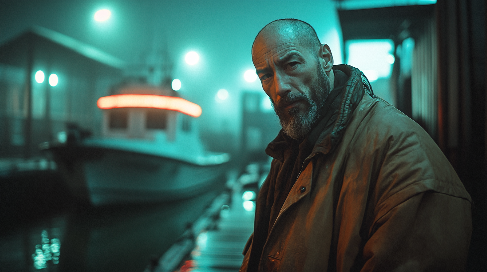
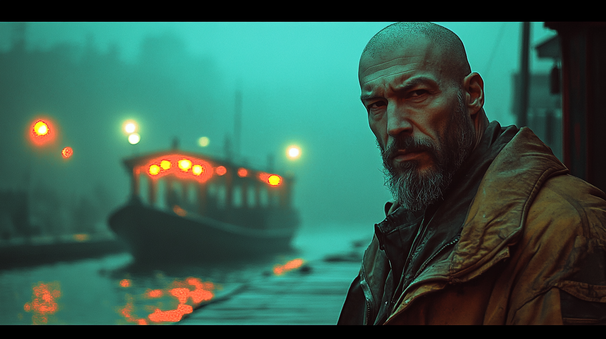

Visual Archive
The man the Harbor
keeps choosing.

The Harbor

Last Call at the Water

Born James Aurelio Vásquez. Nobody calls him that anymore. Nineteen years at sea, then one night — fog so thick he couldn't see the bow of his own vessel — he followed lights he couldn't explain into a harbor he didn't recognize. He tied up. Stepped off the boat. The fog closed behind him. His boat was never found. He never looked for it.
Jim didn't take the security job. The security job came to him. His first two years in VELA, he just existed in the Harbor District. Drank at the dock bars. Fixed engines for people who couldn't afford repairs. Settled disagreements quietly. Learned names. Learned patterns. Learned which arrivals were looking for something good and which ones brought problems with them.
People started coming to him before they went to anyone else. The Harbor has no official owner — that's one of the Rules. But it has Jim. And for most people, that's the same thing. He took the title of Harbor Security Chief because someone printed it on a jacket and left it outside his door one morning. He still wears that jacket.
On paper: he keeps order in the Harbor District. In reality: Jim is the first filter the city has. Every boat that pulls into the Harbor passes him. Every crew, every cargo, every mysterious arrival stepping off a night vessel at 2am — Jim sees them first. He's the reason certain people never make it past the docks. He's also the reason certain right people get quietly pointed toward exactly where they need to go.
He doesn't carry a weapon anyone can see. He doesn't raise his voice. He has never, in anyone's memory, lost a confrontation.
Jim keeps one thing from his fishing days: a compass that no longer points north. He's checked it thousands of times. The needle always points toward the center of the city. He keeps it in his jacket pocket. He doesn't know what it means. He's stopped needing to.
